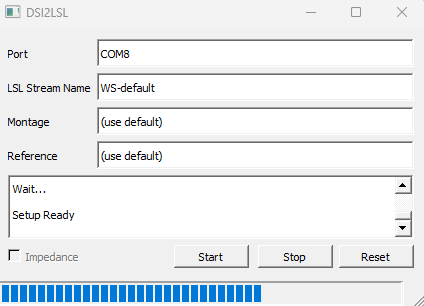

Getting Started#
This page documents how to use the dsi2lslGUI application and configure it for your DSI headset.
Connecting the DSI Headset#
Before you can start your LSL stream, make sure your headset is properly connected to your computer using bluetooth or usb. Once properly connected, go to Device Manager in your Windows search bar and locate the COM port the headset is connected to.
A wireless connection will be listed under the
Bluetoothsection.A wired connection will be found under
Ports (COM & LPT).
Starting dsi2lslGUI#
Go back to dsi2lslGUI, inside of Port enter ‘COM’ followed by the number from your dropdown (e.g., COM8). You are now ready to start consuming the DSI data.
Initial
dsi2lslGUIwindow when first opened.

dsi2lslGUIwindow after clickingStart. The blue indicator shows that the LSL stream is active. If there are any issues with the connection, an error message will appear in the terminal box.

GUI Buttons
Start - Begins the active LSL stream.
Stop - Stops the active LSL stream.
Reset - Sends an analog reset to the amplifier.
Impedance - If checked, Impedance driver will be on after you click Start.
Please note that older versions of the dsi2lslGUI may not have the Impedance checkbox or the Reset button. If you do not see this option, you can still use the application without it.
Configuring Montage and Reference (Optional)#
You can optionally override which EEG channels are streamed by typing into the Montage box a comma-seperated list of channels you wish to record.
Montage set to only record
C3,C4, andPz.
C3,C4,Pz
You can optionally override where the EEG channels are referenced to by typing into the Reference box. Enter the difference or average of channels you wish to reference.
Setting channel reference to average of
C3andC4.
C3/2+C4/2
Resources#
See LSL-Tools for guides on consuming your LSL data.